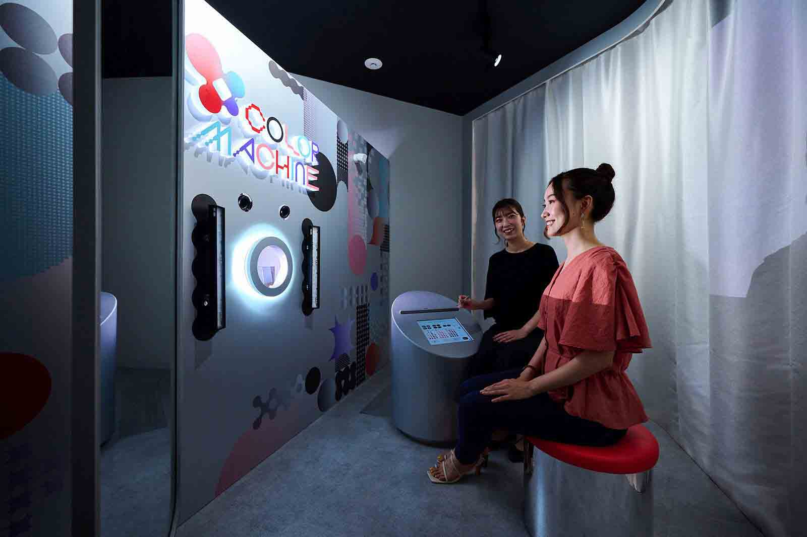

Education
- Ph.D., Information and Communications Engineering, Institute of Science Tokyo 2021.10 - 2025.03
- M.Sc., Information and Communications Engineering, Tokyo Institute of Technology 2019.10 - 2021.09
- B.Sc., Software Engineering, Shanghai Jiao Tong University 2015.09 - 2019.06
Publications
Journals
- Kemeng Zhang, Hao-Lun Peng, and Yoshihiro Watanabe: Impression-Guided Interactive Personalized Color Exploration Framework for Dynamic Projection Mapping Makeup, International Journal of Human-Computer Interaction, 2025.
- Hao-Lun Peng, Kengo Sato, Soran Nakagawa, Yoshihiro Watanabe: Perceptually-Aligned Dynamic Facial Projection Mapping by High-Speed Face-Tracking Method and Lens-Shift Co-Axial Setup, IEEE Transactions on Visualization and Computer Graphics (TVCG), 2025. 📹 Video
- Takashi Nomoto, Wanlong Li, Hao-Lun Peng, and Yoshihiro Watanabe: Dynamic Multi-projection Mapping Based on Parallel Intensity Control, IEEE Transactions on Visualization and Computer Graphics (TVCG), 2022. 📹 Video
- Hao-Lun Peng and Yoshihiro Watanabe: High-Speed Dynamic Projection Mapping onto Human Arm with Realistic Skin Deformation, Applied Sciences, Vol.11, Issue 9, Article No. 3753, 2021. 📹 Video
Conferences
- Hao-Lun Peng, Shin'ya Nishida and Yoshihiro Watanabe: Studying User Perceptible Misalignment in Simulated Dynamic Facial Projection Mapping, IEEE International Symposium on Mixed and Augmented Reality (ISMAR), 2023.
- Nao Tsurumi, Kaoru Ohishi, Ryo Kakimoto, Fumihiko Tsukiyama, Hao-Lun Peng, Yoshihiro Watanabe, and Yuji Masubuchi: Rediscovering your own beauty through a highly realistic 3D digital makeup system based on projection mapping technology, International Federation of Societies of Cosmetic Chemists (IFSCC), 2023.
- Hao-Lun Peng and Yoshihiro Watanabe: High-Speed Human Arm Projection Mapping with Skin Deformation, SIGGRAPH ASIA Emerging Technologies, December 2020.
- Takashi Nomoto, Wanlong Li, Hao-Lun Peng, and Yoshihiro Watanabe: Dynamic Projection Mapping with Networked Multi-projectors Based on Pixel-parallel Intensity Control, SIGGRAPH ASIA Emerging Technologies, December 2020.
- Cheng Luo, Takashi Nomoto, Hao-Lun Peng and Yoshihiro Watanabe: Crosstalk Reduction for Parallax Barrier Stereoscopic Display Based on High-speed Viewpoint Tracking and Projection, The International Display Workshops (IDW 2020), December 2020.
Domestic Conferences
- 河口 将也，彭 浩倫，西田 眞也，渡辺 義浩：顔への追従投影における遅延知覚と表情動作の関係のモデル化の検討, 第75回複合現実感研究会，MR2025-9，2025.
- 河口 将也，彭 浩倫，西田 眞也，渡辺 義浩：顔への追従投影における遅延知覚と表情変化の関係の分析, 第29回バーチャルリアリティ学会大会，2E2-09，2024.
- 袁 璐，彭 浩倫，林 隆介，渡辺 義浩：色補償を用いたプロジェクションマッピングによる顔の年齢変容に関する検討, 第28回バーチャルリアリティ学会大会，2B2-08，2023.
- 樊 錦元，彭 浩倫，天野 敏之，渡辺 義浩：深度計測とカメラフィードバックを用いた投影型色操作の検証, 第68回複合現実感研究会，MR2023-7，2023.
- 袁 璐，彭 浩倫，林 隆介，渡辺 義浩：プロジェクションマッピングによる顔の年齢変容に関する検証, 第68回複合現実感研究会，MR2023-4，2023.
- Tangjitruamboon Tananan，彭 浩倫，渡辺 義浩：ボリュメトリックディスプレイのための素材融合による色操作に関する検証, 映像情報メディア学会 情報ディスプレイ研究会，2021.
Patents
- 杨旭波，谢镇涛，彭浩伦，付坤霞：Vehicle-mounted head-up display equipment picture compensation method and device, storage medium and terminal, CN112904996A, China, 2019.
Projects
-

COLOR MACHINE: Makeup simulator based on dynamic projection mapping
A collaboration between Tokyo Institute of Technology and KOSÉ Corporation, COLOR MACHINE is a system that projects realistic makeup onto a 3D face using high-speed facial tracking and dynamic projection mapping.
- Exhibited at CES 2023 and CES 2025.
- Available for public experience at Maison KOSÉ Ginza since August 2022. Maison KOSÉ
- Awarded CES Innovation Awards 2025. Award details
Skills
- Languages: C, C++, Python, Java, C#, Matlab
- Frameworks: OpenCV, PyTorch, ONNX, Unity, Unreal Engine
- GPU & Graphics: OpenGL, DirectX, Shader programming
- Tools: Git, Linux
Contact
- Email: mxda940107(at)hotmail.com
- Github: github.com/alanpeng1204